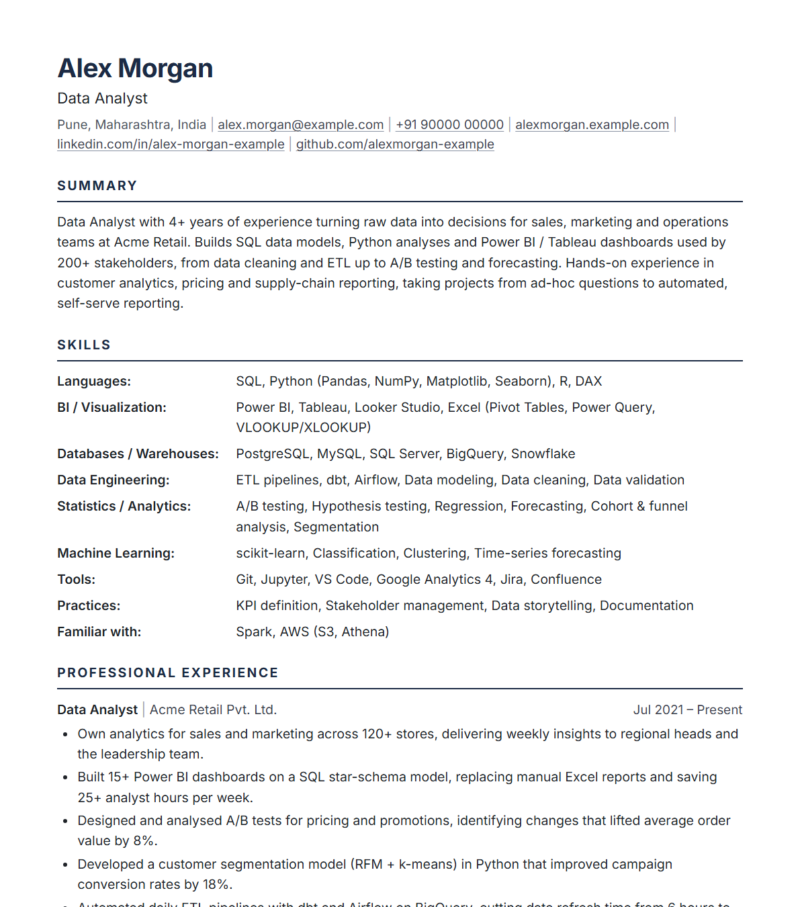

ATS-safe template
Single column, standard headings, real text. No tables, text boxes, images or icons that confuse parsers.
Free · No sign-up · Private
Fill in your details, see a live preview, check your ATS score against a real job description, and download a clean PDF that applicant tracking systems can read — in minutes.
Opens with an example resume you can edit. Prefer an empty page? Start from blank.

Four steps from blank page to a job-ready PDF.
In the Content tab, fill in your name, contact info, summary, skills, experience, projects and education. Bullets are one per line. Add, reorder, rename or hide any section.
Open the ATS check tab and paste the job description. You'll see which keywords you're missing and fixes for weak verbs, missing numbers, dates and length.
In Design, pick A4 or US Letter, font, size, spacing and accent colour. Use Fit to 1 page or Fit to 2 pages to tidy up the length.
Click Download PDF, choose Save as PDF and turn off Headers and footers. Use Export JSON to save a copy you can edit later.
A focused resume tool built around one goal: getting your resume read.
Single column, standard headings, real text. No tables, text boxes, images or icons that confuse parsers.
Instant checks for contact details, summary length, action verbs, quantified results, date formats and page count.
Paste any job posting to see which keywords you already cover and which ones are missing.
See exactly how your page looks as you type, with page-break guides for A4 and US Letter.
One click shrinks spacing, font size and margins to fit your resume on 1 or 2 pages.
Text-based PDF with embedded fonts and clickable links, named after you automatically.
No server, no account, no tracking. Your resume is saved only in your own browser.
Copy a plain-text version for job portal forms, and export JSON to keep a version per job.
Applicant tracking systems scan and rank resumes before a recruiter sees them. The builder handles the format, so you can focus on the content.
Yes. It is completely free, with no sign-up, no watermark and no paywall on the PDF download.
Only in your own browser (local storage). Nothing is uploaded to any server. Use Export JSON to keep a backup file or move your resume to another computer. Clearing your browser data will remove the saved resume, so export a copy.
Yes. The PDF is generated by your browser with real, selectable text in a single-column layout with standard headings, and no tables, images or icons, so applicant tracking systems can parse it in the right order.
Click Download PDF, choose Save as PDF as the destination in the print dialog, and turn off Headers and footers. The file is named after you automatically.
Paste a job posting into the ATS check tab. The builder extracts the most important keywords and shows which ones your resume already contains and which are missing, with a weighted match percentage.
Yes. Use Export JSON to save a version for each job, and Import JSON to load it again later.
It works on mobile, but editing and PDF export are easiest on a desktop or laptop with Chrome or Edge.
It takes a few minutes. No sign-up, and your data never leaves your browser.
Build my resume →